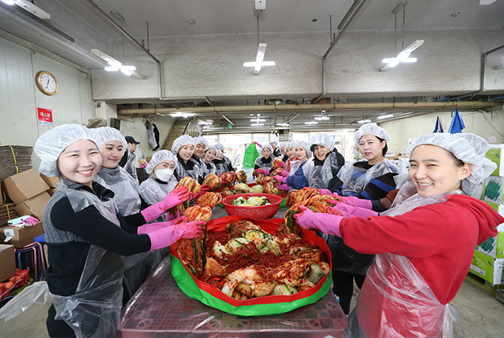
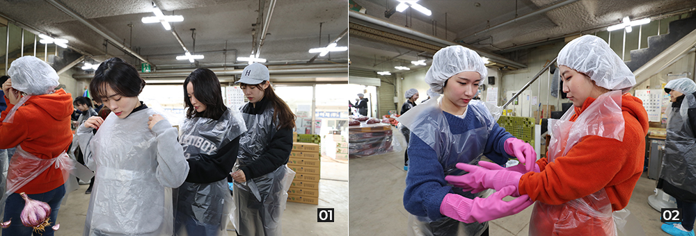
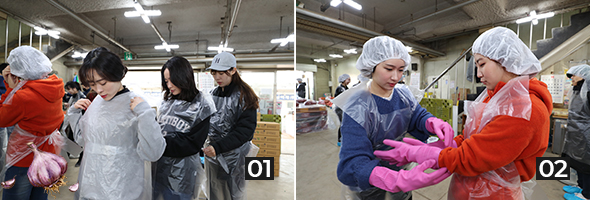
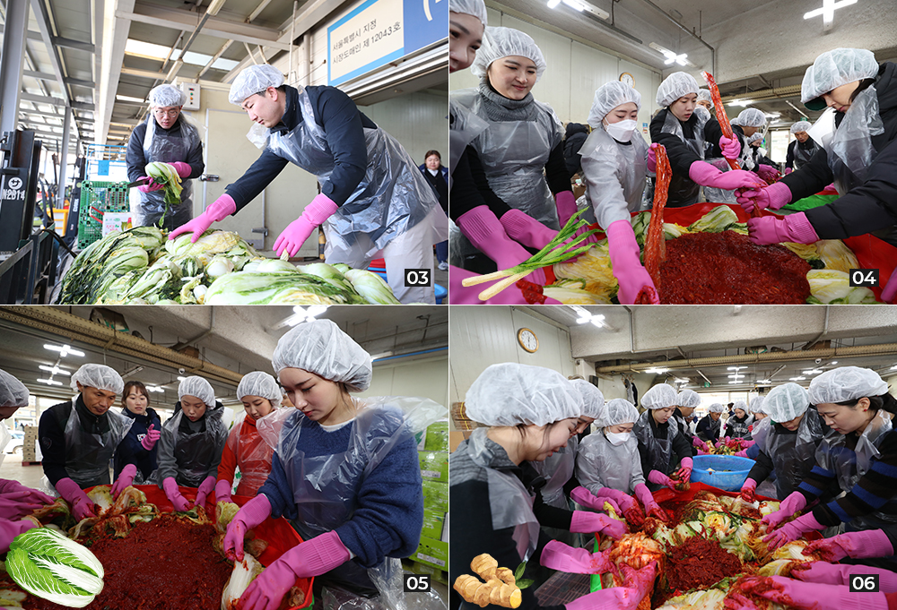
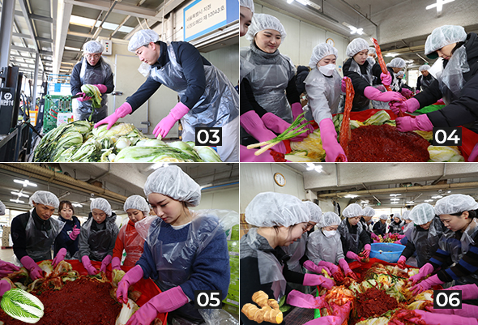
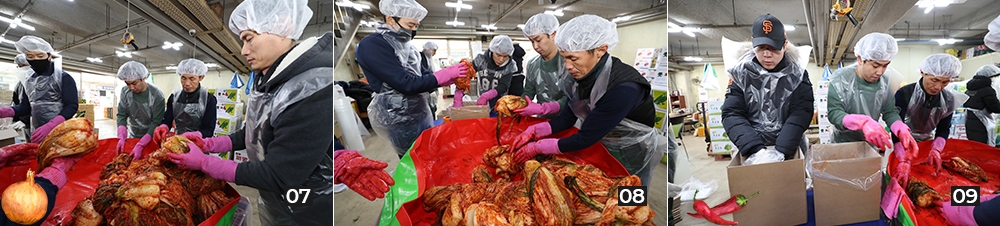
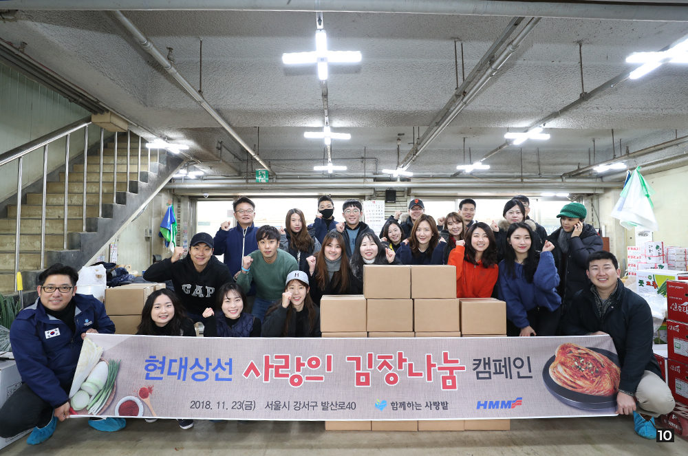
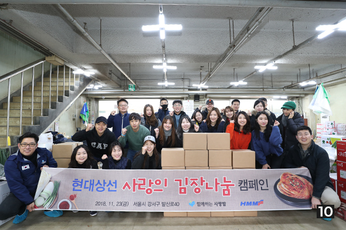

와 제 롤모델이 잡스에요!!! 아이폰 첫 출시되고 나서부터 계속 아이폰 쓰고 있는데 잡스가 너무 그리워요ㅠㅠ 지금은 돈만 벌려고 하는 것 같아서 디자인 발전도 없고ㅠㅠ와 제 롤모델이 잡스에요!!! 아이폰 첫 출시되고 나서부터 계속 아이폰 쓰고 있는데 잡스가 너무 그리워요ㅠㅠ 지금은 돈만 벌려고 하는 것 같아서 디자인 발전도 없고ㅠㅠ와 제 롤모델이 잡스에요!!! 아이폰 첫 출시되고 나서부터 계속 아이폰 쓰고 있는데 잡스가 너무 그리워요ㅠㅠ 지금은 돈만 벌려고 하는 것 같아서 디자인 발전도 없고ㅠㅠ와 제 롤모델이 잡스에요!!! 아이폰 첫 출시되고 나서부터 계속 아이폰 쓰고 있는데 잡스가 너무 그리워요ㅠㅠ 지금은 돈만 벌려고 하는 것 같아서 디자인 발전도 없고ㅠㅠ와 제 롤모델이 잡스에요!!! 아이폰 첫 출시되고 나서부터 계속 아이폰 쓰고 있는데 잡스가 너무 그리워요ㅠㅠ 지금은 돈만 벌려고 하는 것 같아서 디자인 발전도 없고ㅠㅠ
After 6PM
Delivering
Kimchi with
Warm Hearts
to Neighbors
in Need
Delivering Kimchi
with Warm Hearts
to Neighbors
in Need

Editor
HMM is committed to engaging in diverse social contribution activities to support the local community and those in need. At the end of the year, employees at HMM Headquarters participated in cooking traditional Korean food, as well as Kimchi, and delivered the meals to neighbors in need.
Kimchi is an indispensable part of the Korean dining table for every meal. Koreans depend on it as a side dish during the cold winter season. Many people make it themselves during kimchi making season, but there are some neighbors around us who cannot make it because they cannot afford to. HMM organized the “Kimchi Sharing of Love” event for helping those in need.
About 30 HMM employees volunteered for the event, with funds raised by the “Collecting Coins” drive. The Chinese cabbage prepared for the Kimchi sharing event was a whopping 300kg (about 150 pieces) o be delivered to 50 families. Here are some scenes from the event:


01, 02Employees wearing aprons, headscarves and rubber gloves
HMM employees’ united for the cause – motivating them to make 300kg of Kimchi easily!
Employees gathered at the “Kimchi Sharing of Love” event around noon. Despite the cold weather which caused their noses to turn red, they immediately took off their coats and began to put on aprons, headscarves and rubber gloves. After examining the sanitary conditions carefully, they began the process of pickling Kimchi.
For efficiency, the employees divided themselves into three groups: a “preparatory work group,” a “Kimchi-making group” and a “packing group.” The preparatory work group was responsible for cutting salted cabbage to the proper size; the Kimchi-making group put various spices into cabbage leaves; and the packing group divided the finished kimchi into small amounts while making the shape look good and then packed the kimchi into boxes.


03The preparatory work group cuts the pickled cabbage to an appropriate size before putting spices inside.
04-06The kimchi making group performs the task of smearing spices with various sauces into the pickled Chinese cabbage leaves.
In about two hours, the skillful hands of the employees gradually turned piles of Chinese cabbage into red kimchi. Although it was incredibly hard work, satisfied smiles spread across everyone’s faces. The finished product was packed in boxes, awaiting to be delivered by employees.

07-09The packing group makes the shape of Kimchi look good, divides it into bags and then puts it in boxes.
“I think it has been financially burdensome for some to eat kimchi because the prices of kimchi ingredients, including Chinese cabbage, has gone up,” said Jang Soyoung, Network Planning Team. “Although it’s just a small gift, I hope this helps our neighbors in need have a warm winter.”
Another colleague Lee Jueun remarked, “ haven’t had the chance to pickle kimchi at home. I feel proud of myself because I pickled kimchi as a volunteer and delivered it to those in need for the first time.”
It is forecast to be a severely cold winter. However, through ongoing efforts like these, HMM employees aim to help less the burden for those less fortunate.


10Group photo after finishing pickling kimchi!
-
Great
322
-
Like
322
-
Sad
322
-
So-so
322
-
Angry
322